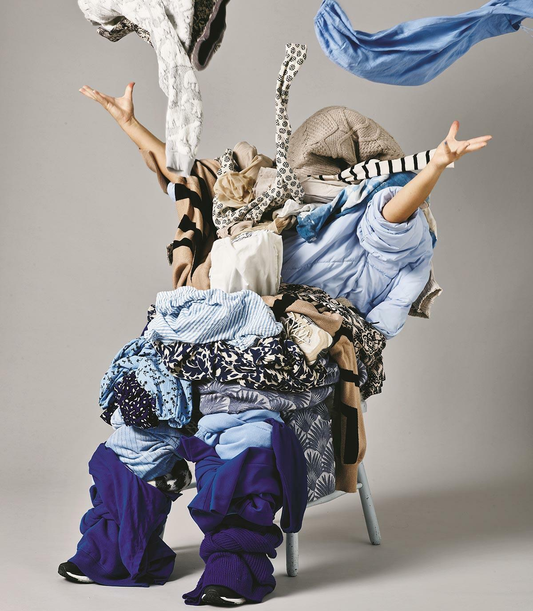

Hvad betyder en god forbrugsvane?
Det betyder, at når vi er bevidste om vores forbrugsvaner og begynder at ændre dem, bliver vi også bevidste om priserne på såvel dagligvarer som langvarige forbrugsgoder.
Men hvor skal man starte?
Mange maskiner og apparater fra hjemmet ender på genbrugspladsen, selvom de stadig fungerer. For eksempel, mange af kaffemaskinerne, tv og … som vi ikke bruger, virker stadig. Ved at slide ting helt ned, går der længere tid imellem produktionen af en ny kaffemaskine osv. og belaster klimaet. Derfor kan vi bruge vores ting i deres hele brugstid
Reparer vores elektriske ting
Små skader på dine ting er ikke ensbetydende med, at de er helt nedslidt. Ved at reparere ting kan vi forlænge levetiden. For eksample, en ridset på et telefon skærm kræver ikke en ny enhed. Et nyt beskyttelsesglas eller en udskiftning af en enkelt komponent hos en reparatør er ofte nok. Så vi kan hjælpe at mindre elektriskaffald
Giv nyt liv til gammelt tøj

Giv tøjet nyt liv frem for at lade det ligge ubrugt i skabet.
Vi lever i en tid, hvor tøj smides ud længe før det slides op, eller rives i stykker længe før vi bruger det, hvilket skaber en masse affald. At have moderne tøj på som en vane er en medvirkende faktor til klimakrisen. Fordi det får os til at smide meget tøj ud, før vi bruger det. Så lad os gennemgå vores garderober og finde tøj, der kan bruges.